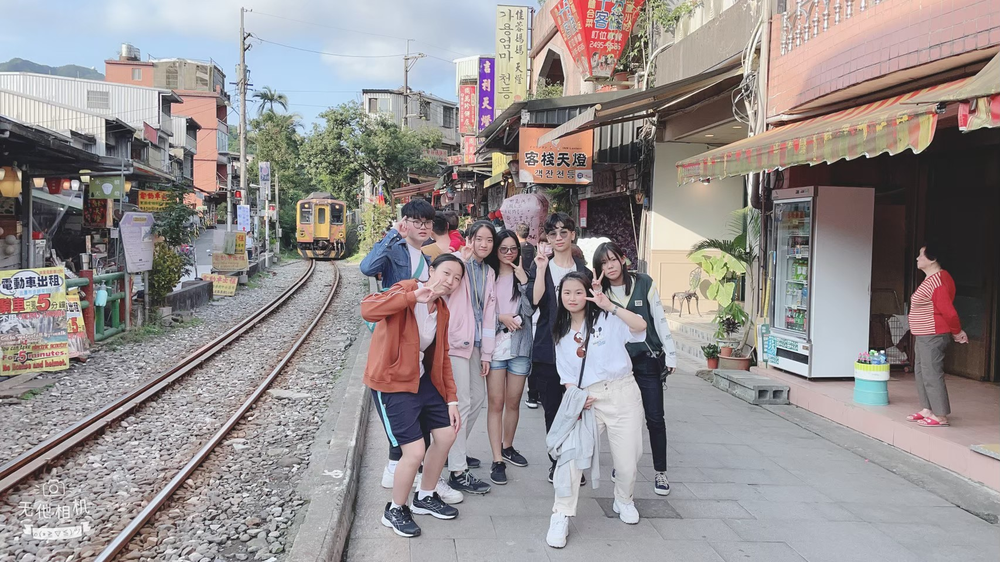
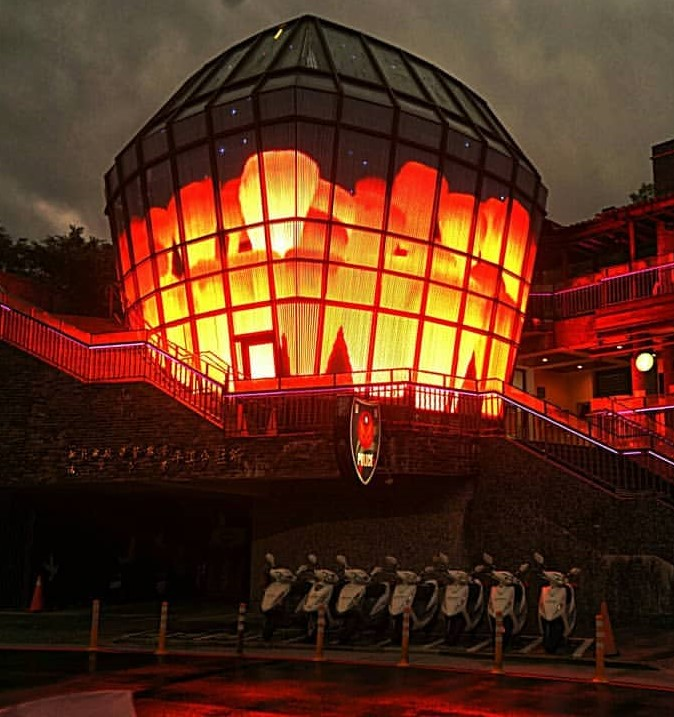
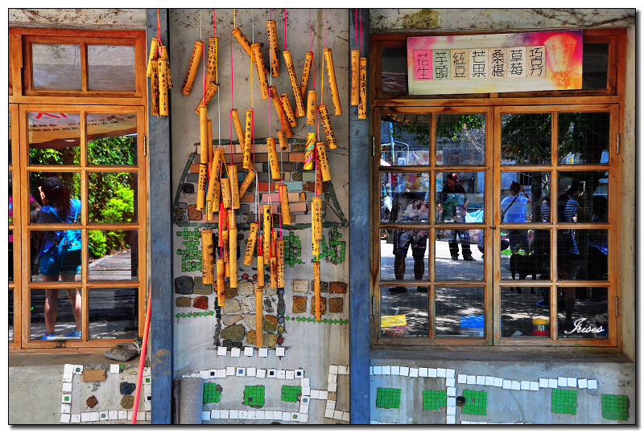
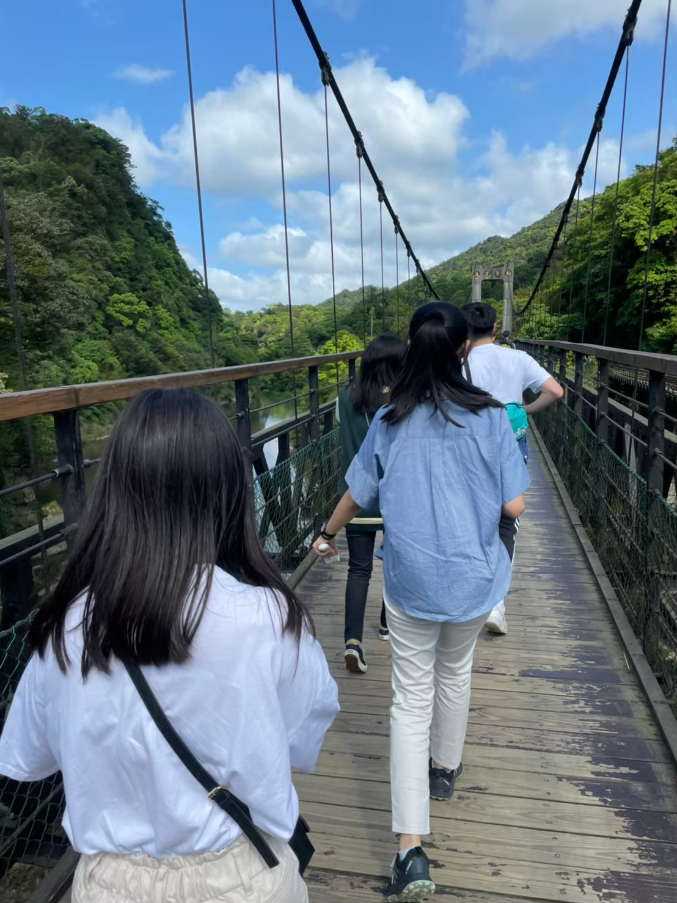
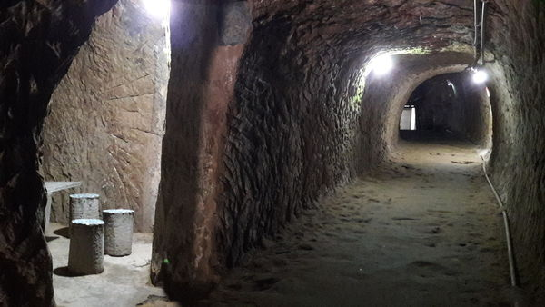

平溪老街
以天燈、鐵道聞名的「平溪」可說北部最夯旅遊聖地之一，
不僅是國外旅客、留學生到訪台灣的一日遊首選，亦是本地人輕旅行口袋名單。
只要從瑞芳搭著平溪支線鐵道依站而下，即可順遊十分、平溪及菁桐老街，還能享受追火車的刺激。

十分瀑布
十分瀑布屬幕簾式瀑布，瀑布就像千軍萬馬奔騰，
傾瀉而下，墜入一大片寬廣深潭，
瀑水形成的水氣經常彌漫在瀑潭上方，呈現出一道彩虹，
顯現出晴空霓虹璀燦奪目，故有彩虹淵的美名。
十分瀑布因岩層的傾向與水流相反，屬於逆斜層瀑布，
此情況與北美的尼加拉瀑布相似，有「臺灣尼加拉瀑布」的美譽。
天燈會館
又名波麗士天燈館外觀主體由造型玻璃帷幕及20萬顆LED燈所構成，
建築結合平溪天燈文化的特色融入當地的地景與天際線，
下午4點到晚上7點的每整點有燈光秀，
介紹天燈緣起以及平溪地方特色，另還提供了客製化的「LED許願天燈」，
遊客可將自己的祝福、心願或者是照片放上天燈，
與一般傳統天燈施放有截然不同的感受。

許願統
許願筒的由來與一個發生在60年代的愛情故事有關。
一個鐵道員和一位冰果室小姐，兩人隔著這個鐵道圍籬兩邊，
兩人隔著這個鐵道圍籬兩邊，發生了一段浪漫的戀情。
他們的故事在菁桐老街上流傳著，成為老人們的記憶之一。
在一次情人節的活動時，主辦單位便設計了許願筒作為活動贈品，
不料竟引發熱烈的反應，成當地的特色之一。
買一個許願筒祈求愛情順利已經成為一種新潮流了。

平溪橋
位於平溪街交叉之處，這一帶便是平溪舊街之所在。
乘坐火車時，可以體會鐵路懸空的感受，
而另一端，在低處平溪橋上，
可以清楚看到鐵路一班班來回經過的特殊景象。

八仙洞
八仙洞是觀光取向的，入口處右側為許願池，
洞內有安裝燈光但卻沒亮，可以不開燈享受冒險的樂趣，
內有石制桌椅提供給探索累了的人們休息，
內部因為潮濕和山泉水滴下之故，
身上都有涼意適合給怕熱的人進去走走。
